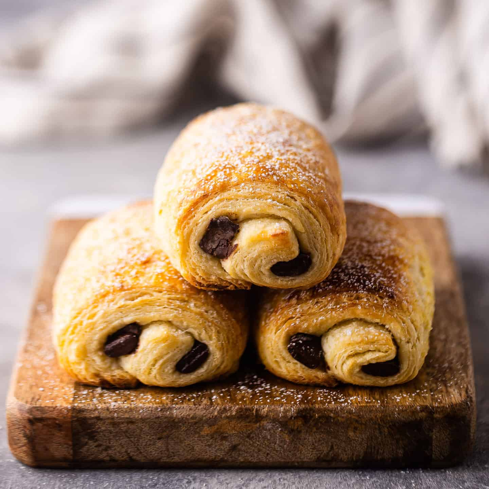

Butter Croissant
- All-purpose (or pastry) flour – 2½ cups (315 g)
- Water – ½ cup (120 ml)
- Milk – ½ cup (120 ml)
- Active dry yeast – 2¼ tsp (7 g)
- Sugar – 2 tbsp (25 g)
- Salt – 1 tsp (5 g)
- Unsalted butter – 1 cup (227 g) (for laminating)
- Optional additions
- Use bread flour for a chewier crumb
- Brush with melted butter between folds
Almond Croissant
- Basic croissant dough ingredients (see Butter Croissant)
- Almond paste (frangipane) – ½ cup (120 g)
- Sliced almonds – ¼ cup (30 g)
- Powdered sugar – 2 tbsp (optional, for dusting)
- Optional additions
- Spread 1 tbsp jam under frangipane for contrast
- Sprinkle ¼ tsp cinnamon into the almond paste
Chocolate Croissant (Pain au Chocolat)
- Basic croissant dough ingredients (see Butter Croissant)
- Dark chocolate batons or chips – 6 pieces (about 3 oz/85 g)
- Egg wash (1 egg + 1 tbsp water)
- Optional additions
- Use a mix of dark and milk chocolate
- Sprinkle 1 tbsp coarse sugar on top